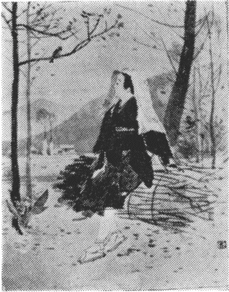

| 白羊宮 | |
| 薄田 泣菫 | |
| 青空文庫 (2017) | |
白羊宮
薄田淳介
この書を後藤寅之助氏にささぐ
わがゆく海
わがゆくかたは、月明
りさし入
るなべに、
さはら木
は腕
だるげに伏
し沈
み、
赤目柏
はしのび音
に葉
ぞ泣
きそぼち、
石楠花
は息
づく深山
、――『寂靜
』と、
『沈默
』のあぐむ森
ならじ。
わがゆくかたは、野胡桃
の實
は笑
みこぼれ、
黄金
なす柑子
は枝
にたわわなる
新墾
小野
のあらき畑
、草
くだものの
釀酒
は小甕
にかをる、――『休息
』と、
『うまし宴會
』の塲
ならじ。
わがゆくかたは、末枯
の葦
の葉
ごしに、
爛眼
の入日
の日
ざしひたひたと、
水錆
の面
にまたたくに見
ぞ醉
ひしれて、
姥鷺
はさしぐむ水沼
、――『歎
かひ』と、
『追懷
』のすむ郷
ならじ。
わがゆくかたは、八百合
の潮
ざゐどよむ
遠
つ海
や、――あゝ、朝發
き、水脈曳
の
神
こそ立
てれ、荒御魂
、勇魚
とる子
が
日黒
みの廣
き肩
して、いざ『慈悲
』と、
『努力 』の帆 をと呼 びたまふ。
ああ大和にしあらましかば
ああ、大和
にしあらましかば、
いま神無月
、
うは葉
散
り透
く神無備
の森
の小路
を、
あかつき露
に髮
ぬれて、徃
きこそかよへ、
斑鳩
へ。平群
のおほ野
、高草
の
黄金
の海
とゆらゆる日
、
塵
居
の窓
のうは白
み、日
ざしの淡
に、
いにし代
の珍
の御經
の黄金
文字
、
百濟
緒琴
に、齋
ひ瓮
に、彩畫
の壁
に
見
ぞ恍
くる柱
がくれのたたずまひ、
常花
かざす藝
の宮
、齋殿
深
に、
焚
きくゆる香
ぞ、さながらの八鹽折
美酒
の甕
のまよはしに、
さこそは醉
はめ。
新墾路
の切畑
に、
赤
ら橘葉
がくれに、ほのめく日
なか、
そことも知
らぬ靜歌
の美
し音色
に、
目移
しの、ふとこそ見
まし、黄鶲
の
あり樹
の枝
に、矮人
の樂人
めきし
戯
ればみを。尾羽
身
がろさのともすれば、
葉
の漂
ひとひるがへり、
籬
に、木
の間
に、――これやまた、野
の法子兒
の
化
のものか、夕寺
深
に聲
ぶりの、
讀經
や、――今
か、靜
こころ
そぞろありきの在
り人
の
魂
にしも泌
み入
らめ。
日
は木
がくれて、諸
とびら
ゆるにきしめく夢殿
の夕庭
寒
に、
そそ走
りゆく乾反葉
の
白膠木
、榎
、棟
、名
こそあれ、葉廣菩提樹
、
道
ゆきのさざめき、諳
に聞
きほくる
石廻廊
のたたずまひ、振
りさけ見
れば、
高塔
や、九輪
の錆
に入日
かげ、
花
に照
り添
ふ夕
ながめ、
さながら、緇衣
の裾
ながに地
に曳
きはへし、
そのかみの學生
めきし浮歩
み、――
ああ大和
にしあらましかば、
今日
神無月
、日
のゆふべ、
聖
ごころの暫
しをも、
知 らましを、身 に。
魂の常井
ああ、野
は上
じらむ曙
の
ゑわらひ浮歩
む童女
さび、
瑞木
の木
がくれに、花小草
、
莖葉
の下
じめり香
を高
み、
朝
蹈
む陰路
の行
ずりに、
若
ゆる常夏
の邦
あらば、
往
かまし、わが心葉
がらみに、
くれなゐ、――燃
ゆる火
の花
と咲
かめ。
ああ、世
にしろがねの高御座
、
美酒
の香
ぞにほふ御座
の間
に、
立
ち舞
ふ八少女
の入綾
や、
樂所
のをんな樂
、箜※
［＃「竹かんむり／候」、U+25C4C、14-1］
の音
の
どよみよ、大海
の浪
とゆる
夜
ながを、宴會
うつ宮
あらば、
ゆかまし、わが心
醉
ざまに、
はえある歌
ぬしの名
をか得
め。
ああ、日
は身
隱
れし宵
やみの
木立
の息
ごもり、氣
をぬるみ、
林精
は水錆江
に羽
ぞ浸
す
靜寂
を、月
しろの影青
く、
ほのめく氣深
さや、空室
に
燈明
の火ぞしめる寺
あらば、
ゆかまし、わが心
夜
ごもりに、
天
ゆく羽車
や聞
きつべき。
ああ、然
は野
に、宮
に、夜
ごもりに、
あくがれまどひにし日
はあれど、
果
しは、野
ごころの伸羽
して、
歸
るや、なつかしき君
が手
に。
たゆげの片
ゑまひ、優
まみの
うるみよ、うら若
き靈魂
の
旅路
に熱
れては、掬
みつべき
うべこそ、眞清水 の常井 なれ。
ひとづま
あえかなる笑
や、濃青
の天
つそら、
君
が眼
ざしの日
のぬるみ、
寂
しき胸
の末枯野
につと明
らめば、
ありし世
の日
ぞ散
りしきし落葉樹
は、
また若
やぎの新青葉
枝
に芽
ぐみて、
歡喜
の、はた悲愁
のかげひなた、
戯
るる木間
のした路
に、美
し涙
の
雨滴
り、けはひ靜
かにしたたりつ、
蹠
やはき『妖惑
』の風
おとなへば、
ここかしこ、『追懷
』の花
淡
じろく、
ほのめきゆらぎ、『囁
き』の色
は唐棣
に、
『接吻
』のうまし香
は霧
の如
、
くゆり靡
きて、夢幻
の春
あたたかに、
醉
ごこち、あくがれまどふ束
の間
を、
あなうら悲
し、優
まみの日
ざしは頓
に、
日曇
り、『現
し心
』の風
あれて、
花
はしをれぬ、蘗
えし青葉
は落
ちぬ、
立枯
の木
しげき路
よ、ありし世
の
事榮
の日
は、はららかにそそ走
りゆき、
鷺脚
の『嘆
き』ぞ、ひとり青
びれし
溜息
低
にまよふのみ。――夢
なりけらし、
ああ人妻
、――
實
にあえかなる優目見
のもの果
なさは、
日直
りの和
ぎむと見
れば、やがてまた、
搔 きくらしゆく冬 の日 の空合 なりき。
冬の日
新甞
の祭
り日
なりき、
午
さがり、曝
れし河原
に、
老御達
、『冬
』こそたてれ、
身
ぞたゆげに。
數
へ日
のこころ細
さや、
涙眼
なる日
のたたずまひ、
物
の影
、淡
げに搖
れて、
うるみ色
に。
雲
の襞
ほのかに鈍
み、
空
ひくに滑
るゆるかさ、
ありし世
のおもひでぐさの
榮
、また、空華
。
みだれ伏
す根
じろ高萱
、
老
しらむ末葉
のそそけ、
氣
を寒
み、失聲
かすけく
音
こそいため。
今
し、日
は思
ひ消
ゆらし、
面隱
し、――うは曇
りして、
夕時雨
しのびに泣
くや、
欷歔
よよと。
かかる日
よ、在巣
の鳥
も、
うらびれし目路
の眺
めに、
さへづりの徒
音
を絶
えて、
俯居
すらめ。
束
の間
や、――やがて日直
り、
冬
の日
はほほ笑
みそめつ。
青
じろき頰
ぞ、鼻
じろむ
面
ほでり。
樹
に、莖
に、伏葉
に、石
に、
泣
き濡
れしうるほひ映
えて
嘆
かひの似
るものもなき
うつくしさや。
日
の心地
、いまの憂身
に、
そのかみの美
き日
をしのぶ
さびしさに、笑
みし子
ならで、
誰 か解 かめ。
零餘子
片
びなた、醜家
のかくれ、
莿
だかの老木
にそひて、
頂
がけり、蔓
の手
たゆき
零餘子
かづら。
八少女
の野
の使
ひ女
に、
身
ぞひとり、ささやけ者
や、
葉
がくれに、ああ聊
かの
實
こそむすべ。
熟色
の黄金覆盆子
は、
そら聖
、あかづら鶫
、
ひと日
來
て、啄
ばみ去
りぬ、
醉
のすさび。
核
ぐみし茱萸
は、端山
の
まめをとこ、栗鼠
か拾
ひて、
小甕酒
釀
みもこそすれ、
洞窟
ふかに。
似
ず、ひとり莖葉
のしたに、
（隱
り戀
、人
こそ知
らね、）
實
はむすび、實
はまた熟
えて、
蔓
もたわに。
つむじ風
、した葉
の煽
り、
あたふたと零餘子
はこぼる。
ああ不祥
、――莿高珠數
の
珠
のみだれ。
實
は、さあれ底土
にひそみ、
日
にめざめ、濕
りに吹呿
び、
いつかまた芽生
を伸
して、
二代
ゆかめ。
身
ぞ小野
の矮人
ながら、
あけぼのの映
、またありし
夕
ながめ、見
こそ醉
ひしか、
數多
がへり。
身
の程
のいささけ業
に、
許
されの性
は足
ひぬ。
ああ熟實
、――わが世
は落
ちて
またかへらじ。
秋収
め、野田
のせはしさ、
敝履
のはためきや、――いま、
せつなさの噞喁
ゆるに、
葉 こそ喘 げ。
鶲の歌
うべこそ來
しか、小林
の
法子兒
鶲
、――
そのかみ、（邦
は風流男
の代
にかもあらめ。）
豐明節會
の忌
ごろも、童男
のひとり、
日蔭
かづらや曳
きかへる木
のした路
に、
葉染
の姫
に見
ぞ婚
ひて、生
れにし汝
、
黄櫨
のうは葉
はくれなゐに、
また、榛樹
の虚
の實
は、根
に落
ち鳴
りて、
常少女
なる母宮
の代
としもなれば、
すずろありきや許
されて、
さこそは獨
り野木
の枝
に、
占問
ひ顏
にたたずみて、
初祖
の人
や待
ちつらめ。
ひととせなりき、
春日
の宮
の使
ひ姫
、秋
ふた毛
して、
竹柏
の木
の間
をゆきかへる小春日和
を、
都
ほとりの秋篠
や、
＊
『香
の清水
』は水錆
びてし古
き御寺
の
頽廢堂
の奧
ぶかに、
技藝天女
の御像
の天
つ大御身
、
玉
としにほふおもざしに、
美
し御國
の常世邊
ぞ
あくがれ入
りし歸
るさを、
ふとこそ、荒
れし夕庭
の朽木
の枝
に、
汝
が靜歌
を聞
きすまし、
心
あがりのわが絃
に、
然
は緒合
せにゆらぐ音
の歌
ぬしこそは、
うべ睦魂
の友
としも、
おもひそめしか。
また、ひと歳
は神無月
、
日
ぞ忍
び音
に時雨
れつる深草
小野
の
柿
の上枝
に熟
みのこる美
し木醂
、
入日
に濡
れて面
はゆに紅
らむゆふべ、
すずろ歩
きの行
くすがら、
竹
の葉山
の雨滴
りはらめく路
に、
汝
を、ひとり黄鶲
の
默
の俯居
をかいまみて、
＊
ありし掛想
のまれ人
の
化
か、雨
じめる野
にくゆる物
のかをりに、
そのかみの夜
や思
ひいでて、
涙眼
に鳥
は嘆
くやと、
目
ぞ留
りにし。
ああ汝
こそ、小林
の
法子兒
鶲
、――人
の世
の往
くさ來
るさに、
ともすれば、まためぐり會
ふ魂
あへる子
や、――
實
にいささめの縁
ながら、空華
にはあらじ。
わが魂
の小野
にして、
『努力
』の濕
ひ、『思慧
』の影
おほし齋
きて、
さて咲
きぬべき珍
の花
、
そのうら若
き莟
みこそ、
さは龕
の戸
と噤
みつれ、
まだき滴
る言
の葉
の美
しにほひは、
生命
の火
をも齋
はふまで、
香
にほのめきぬ。
＊秋篠寺に香水堂あり常曉阿闍梨閼伽井の舊蹟なり
＊竹の葉山の下路は深草少將が通ひ路の舊蹟と傳へらる
望郷の歌
わが故郷
は、日
の光
蟬
の小河
にうはぬるみ、
在木
の枝
に色鳥
の咏
め聲
する日
ながさを、
物詣
する都女
の歩
みものうき彼岸會
や、
桂
をとめは河
しもに梁誇
りする鮎
汲
みて、
小網
の雫
に清酒
の香
をか嗅
ぐらむ春日
なか、
櫂
の音
ゆるに漕
ぎかへる山櫻會
の若人
が、
瑞木
のかげの戀語
り、壬生狂言
の歌舞伎子
が
技
の手振
の戯
ばみに、笑
み廣
ごりて興
じ合
ふ
かなたへ、君
といざかへらまし。
わが故郷
は、楠樹
の若葉
仄
かに香
ににほひ、
葉
びろ柏
は手
だゆげに、風
に搖
ゆる初夏
を、
葉洩
りの日
かげ散斑
なる糺
の杜
の下路
に、
葵
かづらの冠
して、近衛使
の神
まつり、
塗
の轅
の牛車
、ゆるかにすべる御生
の日
、
また水無月
の祇園會
や、日
ぞ照
り白
む山鉾
の
車
きしめく廣小路
、祭物見
の人
ごみに、
比枝
の法師
も、花賣
も、打
ち交
りつゝ頽
れゆく
かなたへ、君
といざかへらまし。
わが故郷
は、赤楊
の黄葉
ひるがへる田中路
、
稻搗
をとめが靜歌
に黄
なる牛
はかへりゆき、
日
は今
終
の目
移
しを九輪
の塔
に見
はるけて、
靜
かに瞑
る夕
まぐれ、稍
散
り透
きし落葉樹
は、
さながら老
いし葬式女
の、懶
げに被衣
引延
へて、
物嘆
かしきたたずまひ、樹間
に仄
めく夕月
の
夢見
ごこちの流盻
や、鐘
の響
の青
びれに、
札所
めぐりの旅人
は、すゞろ家族
や忍
ぶらむ
かなたへ、君
といざかへらまし。
わが故郷
は、朝凍
の眞葛
が原
に楓
の葉
、
そそ走
りゆく霜月
や、專修念佛
の行者
らが
都入
りする御講凪
ぎ、日
は午
さがり、夕越
の
路
にまよひし旅心地
、物
わびしらの涙眼
して、
下京
あたり時雨
する、うら寂
しげの日短
かを、
道
の者
なる若人
は、ものの香
朽
ちし經藏
に、
塵居
の御影
、古渡
りの御經
の文字
や愛
しれて、
夕
くれなゐの明
らみに、黄金
の岸
も慕
ふらむ
かなたへ、君 といざかへらまし。
金星草の歌
一
そのかみ、山
の一
の日
に、草木
はなべて、
ああ金星草
、
色
ゆるされの事榮
に笑
みさかゆるを、
ああひとつば、
ひとり空手
に、山姫
の宣
をこそ待
て、
ああひとつば。
二
春
は馬醉木
に、蝦夷菫
かざしぬ、花
を。
ああひとつば、
裝
ひ似
ざるうれたさに、宮
にまゐりて、
ああひとつば、
願
へど、姫
は事
なしび、素知
らぬけはひ、
ああひとつば。
三
夏
は山百合
、難波薔薇
香
にほのめきぬ、
ああひとつば、
匂
ひ香
なきにうらびれて、一日
は洞
に、
ああひとつば、
嘆
けど、姫
は空耳
に片笑
みてのみ、
ああひとつば。
四
秋
は茴香
、えび蔓
實
ぞ色
づきつ、
ああひとつば、
素腹
の性
を恨
みわび、夜
を泣
き濡
れて、
ああひとつば、
萎
ゆれど、姫
は目
も空
に往
き過
ぎましぬ、
ああひとつば。
五
やがて葉
は散
り、實
は朽
ちぬ。冬木
の山
に、
ああひとつば、
獨
りし居
れば、姫
は來
て『思
ひかあたる、
ああひとつば、
世
は吾
とわが知
るにこそ、在
りがひはあれ。』
ああひとつば。
六
姫
は微笑
み、『今日
もはた、香
をか羡
む、
ああひとつば、
色
をか、いかに、齋
ひ子
の斯
くや、御賜
。』と
ああひとつば、
その日
よりこそ、黄金斑
の紋葉
とはなれ、
ああひとつば。
夕ごゑ
日
は暮
れぬ、野
の面
低
に、
霧
はくゆるたゆげさの、
齋
精進
、懺悔
のひと夜
、
思
ひしづむ魂
ならし。
夕晴
の黄金路
に、
かへる鳥
の遠
がくれ、
胸
の汚染
、ひとつ消
えて、
今
はた、二
のうするかに。
葉
ずくなの並木
なかに、
『靜
こころ』の浮歩
み、
木木
の枝
しぬに垂
れて、
われかの樣
に息
づきぬ。
いま雲
の夕
くれなゐ、
天照
る日
の大殿
に、
をんな樂
、かへり聲
の
ほのにひびく夢
ごこち。
淨
まはる魂
の深
み、
聖
ごころととのひて、
美
し音
のさこそ響
む
日 のあなたに往 かまほし。
＊ 師走の一日
一
み冬
となりぬ、日
暮
れぬ、
ひねもす森
にあらびし
脚早
の野分
は、うしろ寒
に、
そそけの髮
もみだれて、
北山
あたりいそぎぬ。
もとあら木立
の落葉林
、
木
の息
ごもりたゆげに、
殘
りの葉
こそは風
にあへげ。
二
澄
みつる空
や、さながら
ありにし戀
も忘
れて、
菩提樹
がくれの法
の苑
に、
『無漏慧
』にあそぶ聖
の、
とわたる鳥
のありなし、
いささの染
をもえは許
さぬ
齋戒
か、――嚴
の清
まりは、
見
るだに堪
へせじ、現
しごころ。
三
あな大日枝
の額
に、
玉冠
する夕日
の
光
や、天
なる美
し眼
ざし、――
東
へ、ゆるに峰越
の
淡雲
すべる靜
けさ、
これやは終
なる魂
のひと日
、
すずろに心
ゆらぎて、
ありしを忍
ぶる美
き名
ならし。
四
束
の間
なりき、夕
ばえ
今
はた仄
にうすれぬ。
さて日
は葬式
の鈍
に暮
れて、
眞闇
の墓
に入
るらめ。
この靜
かなる臨終
に、
吾
や看護婦
の心
しりに、
日
の物深
さしのびて、
祕密
のこころも辿
らまほし。
＊洛東下岡崎の里より
大比叡の方を眺めてよめる
妖魔『自我』
一
妖
こそ見
しか、立枯
の木
繁
き木原
［＃ルビの「こはら」は底本では「こ ら」］
、
色鳥
はさしぐむ路
の奧
ぶかに、
ひともと青木
、木叢
なる廣葉
のかくれ、
黄金
なす鈴生
の實
をなつかしみ、
熟
みつはりたるひと房
を摘
みにし日
なり、
矮人
の黒染
すがたつと見
えて、
『あな許
されぬ慧
の實
を、』と私語
低
に、
面隱
し、目
ぶかに被衣
うちまとひ、
挊杖
の音
ほとほとと、木
のした路
を、
見
え隱
れ、鷺脚
にこそ辿
りしか。
二
妖
こそ見
しか、姫百合
は木暗
に俯居
、
石楠花
は日向
に夢
む花苑
に、
あえかの人
と相曳
の日
のしづけさを、
囁
きは細蜂
の羽
とひるがへり、
うまし言葉
は清酒
の露
としたみて、
醉心地
、愛
でのまどひを、――あな詫
し、
生目
とまりし苧垂
の裾
うちはへて、
木
がくれに奧寄
る人
の後姿
に、
頂
がくる手
は解
けたるみ、ふくろ心
の
氣
をさむみ、身
は物怖
に竦
まりき。
三
妖
こそ見
しか、午
さがり日
ぞ照
りあかり、
美
し香
はほのかに薫
ゆる新舘
、
一
の樂所
にかきならす眞玉
唐琴
、
立樂
の色音
は浪
のたかまりに、
心
あがりの面
ほでり、とりゆの半
ば、
風流男
や、紅顏孃子
の間
の座
に、
異
よそほひの長
すがた、童男
のひとり、
弱肩
の藤衣
のやつれに見惱
ひて、
押手
は梁
のくづれ鮎
さみだれ落
ちて、
緒合
せの調
べの糸
ぞなか絶
えし。
四
妖
こそ見
しか、御燈
の火
はねむたげに、
華籠
の花
吐息
かすけき古寺
に、
夕座
まゐりの在
り人
は罷
りし夜
はを、
身
ぞひとり齋居
精進
の籠
り居
に、
思
ひ恍
けてし常世邊
の、美
し黄金
の
嚴
の苑
、――天
つ少女
の相舞
に、
見
しは、頭白
のねび御達
、あな時
のまに、
なよびかの姫
は隱
れて、唯
ひとり
墳墓
の如
立
ち殘
るものわびしさに、
胸騷
ぎ、つとまぼろしは覺
めはてき。
五
妖
こそ見
しか、水無月
の祭
のひと日
、
往
き軋
む飾車
の山鉾
に、
日
ぞ照
りしらむ日盛
［＃ルビの「ひざか」は底本では「ひざかり」］
りの都大路
を、
人
なだれ、祭物見
の大衆
に、
また見
ぬ、鈍
の衣
かづき、他
こそ知
らね、
不毛地
の野
にも往
くかのうらびれに、
打附
ごころ、小走
りに追
ふとはすれど、
物
の怪
は絶
えずかなたに前
ゆきて、
えこそ及
ばね、足
惱
みぬ、ああ息詰
むと、
道
のべに、身
ぞしだらなに倒
れにし。
六
こよひ熱
るる病臥
の惱
みのもなか、
世
はとみに鴉羽
いろの焰
して、
蕩
けたゆたふ火
の海
に、吾
や落葉
の、
左視右顧
、ゆくへも知
らぬ途
すがら、
ふと遠方
に目
馴
てし人
がたち見
て、
直
みちに追
ひすがりつゝ失聲
して、
『君
よ』と呼
べば、立
ちどまり、振向
き樣
に、
『見惱
ひの時
こそ來
れ。』と脱
ぎすべす
被衣
のひまに見入
るれば、あな『我
』なりき、
驚駭 に胸 はふたぎぬ、危篤 れぬ。
日ざかり
季
は夏
なか、
日
ぞ眞晝
、
日
ざしは麥
の
穗
にしらみ、
野
なかの路
に
またたきて、
濁酒
の如
、
湧
きたちぬ。
牧
の小野
には、
並木立
、
腕
だるげに
葉
を垂
れつ。
青
ぶくれなる
水錆沼
は、
めまぐるしさに、
息
だえぬ。
雲
のひとひら、
たよたよと
噞喁
ひゆきて、
ありなしに、
やがては消
えつ。
濃青
なる
空
や、虚
なる
墓
ならし。
水
の面
の水澁
氣
をぬるみ、
蠑螈
は に
に
くぐり入
り、
爐土
の香
に
息
むせて、
蛇
はひそみぬ、
葉
がくれに。
なべての上
に
高照
す
嚴
の嘖
や、
あな寂
し、
悔
なき魂
の
けだかさは、
げに水無月
の
日 ならまし。
＊ 笛の音
生命
の路
のもろ側
に聳
やぎ立
てる
『かなしび』の女木
、『よろこび』の男木
、
今宵
さしぐむ月代
のまみの濕
みに、
すずろに木靈
うらびれて、
天
の幸
夜
にあくがるる沈默
の深
みを、
笛
の嘆
きの音
をいたみ、
上枝
そよろに囁
やきて散
りこそまがへ、
二木
の落葉
ほろほろに。
『日影
［＃ルビの「ひかげ」は底本では「ひがげ」］
にしめらへる
『かなしび』の
一片
は黄朽葉
の
色
に染
み。』
『日向
にひるがへる
『よろこび』の
一片
は緑葉
の
香
ににほふ。』
『ああ、わが故郷
は
聖
り世
の
沈默
ぞ、齋居
する
嚴
の苑
。』
『また、わが本宮
は、
箜篌
の音
の
緒合
せ、うちどよむ
美
し國
。』
『そこしも、黄金
なす
『慧
』の實
、はた
木
ぐらき無憂華樹
の
葉
のにほひ。』
『かしこよ、狹丹
づらふ
『愛
』の花
、
『努力
』の常烽火
、
日
の光
り。』
『そこしも、齋
き女
の
小忌
ごろも、
蠟
の火
、黄金
文字
、
偈
のけはひ。』
『かしこよ、八少女
の
をんな樂
、
盃誓
、さざめ言
、
白酒
の香
。』
『かなたへ、――忌
精進
、
夜
ごもりに、
今
はた歸
るべき
羽
。』といへば、
また言
ふ、『かかる夜
を、
宴會
うつ
かなたへ、――いざ、朱
の
赭舟
を。』
『苑
には、領
す神
名
こそあれ、
畏
こし、あな天
の
『あくがれ』女
。』
『宜
こそ、いまそがる
國
つ神
、
尊
とし、名
は天
の
『あくがれ』男
。』
色音
は絶
えつ、――醉
ひざまの心
あがりに、
さざめき散
りし飜
れ葉
は、
糸絡
みせし舞
の羽
の、つと舞
ひさして、
噤
みぬ、下
に落
ち敷
きぬ。
生命
の路
に、雌鳥羽
に、はた雄鳥羽
に、
唇
觸
れあひて相寢
ぬる
伏葉
の亂
れ、魂合
へる美
し睦
びに、
月
は夜
すがら見
ぞ惚
けぬ。
＊秋の末つ方月の一夜洛東華頂山
境内に笛の音をききて咏める
鳰の淨め
夏
なかの榮
えは過
ぎぬ、
くたら野
の隱
れの古沼
、
『靜寂
』は翼
を伸
して
はぐくみぬ、水
のおもてを。
鳰
や、實
に淨
めの童女
［＃ルビの「をとめ」は底本では「をさめ」］
、
尼
うへの一座
なるらし。
なづさひの羽
きよらかに、
水泥
なす水澁
に浮
きつ。
水漬
く葉
の眞菰
のみだれ、
伏葦
の臂
のひかがみ、
末枯
や、――さてしも齋塲
、
おもむろに鳰
は滑
りぬ。
漁人
の沓
のおとにも、
鼻
じろみ、面隱
す兒
の
振
りかへり、かつ涙
ぐみ、
水
がくれにつとこそ沈
め。
河骨
の夏
を夢
みて、
ほくそ笑
む水底
の宮
、
潜
ぎ姫
、『歸依
』の掬
むなる
常若
の生命
湛
ひぬ。
見
ず、暫時
、――今
はた浮
きつ、
淨
まはる聖
ごころの
かひがひし、あな鳰
の鳥
、
日 ねもすに齋 きゆくなり。
をとめごころ
一
黄金覆盆子
は葉
がくれに、
眼
うるみて泣
きぬれぬ。
青水無月
の朝野
にも、
嘆
きはありや、わが如
く。
二
幸
も、希望
も、やすらひも、
海
のあなたに徃
き消
えつ。
この世
はあまりか廣
くて、
をとめ心
はありわびぬ。
三
朝
踐
む風
のささやきに、
覆盆子
のまみは耀
きぬ。
神
はをとめを路
しばの
片葉 とだにも見給 はじ。
忘れぬまみ
一
夏野
の媛
の手
にとらす
しろがね籠
、ももくさの
香
には染
むとも、追懷
は
人
のまみには似
ざらまし。
二
伏目
にたたすあえかさに、
ひと日
は、白
き難波薔薇
、
夕日
がくれに息
づきし
津
の國
の野
を思
ひいで。
三
ひと日
は、うるむ月
の夜
に、
水漬
く磯根
の葦
の葉
を、
卯波
たゆたにくちづけし
深日 の浦 をおもひいでぬ。
離別
一
別
れは、小野
の白楊
、
夕日
がくれに落
つる葉
の
長息
よ、繁
にうらびれて、
さあれ、靜
かに離
れゆきぬ。
二
かたみの路
の足
惱
みに、
思ひしをれて弛
む日
は、
美
くしかりしそのかみの
事榮
にしもなぐさまめ。
三
愛
でのさかりに、何
知
らず、
この日
も、やがてありし世
の
往
きてかへらぬ追懷
と、
消 ゆらめとこそ思 ひしか。
香のささやき
一
この夕
ぐれの靜
けさに、
魂
はしのびに息
づきて、
何
とはなしに、おもひでに、
二
つの花
の香
を嚊
ぎぬ。
二
ひとつは、濕
める梔子
の、
別
れのゆふべ泣
き濡
れし
あえかの胸
に、今
［＃ルビの「いま」は底本では「いも」］
もはた、
『日
』は殘
らめとささやきつ。
三
ひとつは、薫
ゆる野茨
の、
今
は末枯
れぬ、そこにして、
また新
しき『日
』は芽
ぐみ、
花 もぞ咲 くとつぶやきつ。
時のつぐのひ
時
はふたりをさきしかば、
また償
ひにかへりきて、
かなしき創
に、おもひでの
うまし涙 を湧 かしめぬ。
美き名
今日
しも、卯月
宵
やみに、
十六夜薔薇
香
ににほふ。
なつかしきもの、胸
の戸
に、
黄金
の文字
の名
ぞひとり。
神
はをとめを召
しまして、
いづくは知
らず往
にしかど、
大御心
のふかければ、
殘 る名 のみは消 しませね。
牧のおもひで
夕月
さしぬ、野
は凍
みぬ、
日
のいとなみに倦
みはてて、
苅
りし小草
に倒
れ伏
し、
別
れし人
の身
ぞおもふ。
さても、眞晝
を玉敷
の
御苑
にたたす君
なれば、
夜半
にはかかるくたら野
に、
すずろ歩 きもし給 ひぬ。
くちづけ
今朝
あけぼのの浦
にして、
われこそ見
つれ、面
ほでり、
濃青
の瞳子
、ひたひたの
み空
と海
の接吻
を。
君
や青空
、われや海
、
ああ醉心地
、擁
しめに
胸
ぞわななく、さこそ、かの
か廣 き海 も顫 ひしか。
大葉黄すみれ
人
待
つ宵
を、日
のかたみ、
大葉黄菫
花
さきぬ、
愛
での盛
りに、言
ひ知
らず、
物
さびしさの身
にぞ泌
む。
花
とをみなの持
てなやむ
悲
びな來
そ、天
つ日
の
ながながし齡
に唯
ひと日
、
今日 に醉 ふなる身 のふたり。
無花果
葉
こそこぼるれ、夏
なかの
青水無月
のかげに見
し
その日
の夢
はまづ覺
めて、
今日
はた汝
、――ああ無花果
。
昨日
ぞ、夕
に、あかつきに
露
けかりつる身
のふたり、
明日
を、天
なる大御手
に
委 ぬるも、はた、――ああ無花果 。
心げさう
霜月
ひと日
、朝戸出
に、小野
の木守
は、
莿高膚
の阿利襪樹
の根
に散
りぼひし
實
のあり數
に驚
きて、つと立
ちかへり、
目無
し籠
を後
ろ手
にふた行
くごとく、
ただ目
に人
を見
し時
は、なよび姿
の
耀
ひわたる清
らさに、戀
は退
りて、
ふくろ心
の奧
ぶかに隱
るとせしが、
落 ちゐて、やがて花 やかに穗 に現 はれぬ。
わかれ
別
れぬ、二人
。魂合
ひし身
は、常世
にも
離
れじとこそ悶
えしか、そも仇
なりき。
落葉
もかくぞ相舞
に散
りはゆけども、
分 ちぬ、風 は追 わけに。さて見 ず知 らず。
幻なりき
幻
なりき、事映
の消
えゆくにこそ、
御賜
のふゆの、かつがつに目耀
ひ初
むれ。
ああ神無月
、木叢
なる葉
ぞ散
り透
きて、
濃青 の空 の微笑 ひ、然 はほのめきつ。
月見草の歌へる
夕
づく日
、黄金
羽
ぐるま、
海
の宮
、今
かも沈
め、
天
つ軋
み。
野
づかさの草
の淺
みに、
まどろみの夢路
は覺
めぬ、
目
こそひらけ。
夕霧
は、身樣
たゆげに、
目馴樹
の木叢
にまきて、
うしろ袈裟
に。
青羽木菟
、叉枝
低
に、
片眠
り、言葉
ずくなの
宿居
すがた。
靜
けさの野
によみがへる
青
をみな、身
や幸魂
の
月見小草
。
見
よ、かなた、森
の木
の間
に、
うは白
み、――ああ月白
の
にほひ仄
に。
いま、樹々
の片枝
の青
み、
やがて、野
のしろがね色
や、
被衣兄姫
。
ぢきたりす
花
の瞳子
は、
日
にあきて、日
にしも笑
みぬ、
紅顏童女
。
似
ず、わなみ若尼御前
の、
夜籠
りに、ささらえをとめ
見
こそ惱
へ。
身
ぞ、姫
が丈
の垂
り髮
花鬘
、しづくや凝
りし
こゝろまどひ。
姫
か、また魂
のおほ宮
、
常世邊
や、――無上涅槃
の
嚴
のむしろ。
焚
きしむる花
の蕚
は、
夜
の、やがて吾
が世
黄金
の
齋
ひ火盤
。
くゆり香
は、莖葉
に蒸
して、
聖
り世
の初夜
の精進
、
齋塲
淨
め。
靜
こころ、下
にゆらぎて、
魂
むすび、――思
ひぞあがる
醉
ひの今
や。
野
の老狐
踏
みは折
るとも、
えやは朽
ちめ［＃ルビの「く」は底本では「ち」］
、身
よ弱草
の
聖 ごころ。
野菊の歌へる
咲
きいでて今日
しも七日
、
野茨
の莿
にしまじる
うまれ拙
な。
つまどひの京
をんな鷸
、
黄脚
踏
む下
にも折
れて、
莖葉
かがむ。
神無月
、入日
の淡
さ、
しくしくと光
はにじむ、
臂
の痛
み。
彼處
、いま花
はひからび、
香
は朽
ちて、老
がれ鳴
るや、
河原
よもぎ。
ここに、また根
は覆
へり、
亂
り尾
の苦參
こそ寢
れ、
腕
だるに。
草絡
み、落葉
の反
に、
熟白英
、――ぬる火
の雫
、――
實
こそつゆれ。
今
はとて、占野
の歌女
蟋蟀
は、絃
をゆるめて
入
るや、培土
。
寂
しさは墓
のふかみに、
あな聞
きぬ、『宿世
』の脚
の
忍
びありき。
歸依
の根
を延
けばや下
に、
戰慄
の今
はも、阿摩
へ
かへる心地 。
夢ざめしをり
夢
ざめつ、――今
はた聞
きね、
眞白
げの眠
りの退羽
、
羽
ぶきゆくを。
夢
か、――さは、わが世
の刈野
、
片日向
、小春日和
の
日
かげぬるに。
過
ぎ去
りし日
の事榮
は、
刈株
の芽生
を伸
して、
花
こそ咲
け。
花
よ、黄
のかをりに蒸
して、
遶佛
や、童
すがりの
一は、『歸依
』に。
花
よ、火
の雫
に燃
えて、
下
こがれ、葉
がくれ朽
ちし
『戀
』は、朱
に。
あるは、葉
の煽
りのひまに、
しら笑
ひ、――似非
方人
や、
『幸
』の白
み。
あるは、眼
のまなじり濕
み、
うなだるる面
ざし、妖
の
『才
』の青
み。
また、蔭
に蜘網
弛
みて、
『過去
』や、足高蜘蛛
の
冷
えし死骸
。
葉
の緑
、ふとこそ萎
えて、
しをれゆく、――わが世
は鈍
の
藤衣
の窶
れ。
青
びるる身
よ、朽尼
の
老
ほけて、見入
るしばしを、
魂
も瘠
せぬ。
鈍
の色
、ややに薄
れて、
初
びかり、――ああ曙
や、
目
こそさむれ。
明
けわたる光
の野
こそ、
『當來
』や、わが新身
の
嚴
の眞屋
に。
初
びかり、げに常春
の
かなた見
て、躍
りぬ、胸
の
聖 ごころ。
海のおもひで
一
夕浪
倦
みぬ、――さこそ吾
。
眞白羽
ゆらに飄
へりし
鷗
は水脈
に、――さこそ、わが
魂
よたゆたに漂
へれ。
二
嘆
きぬ、葦
はうら枯
の
上葉
たゆげに顫
なきて。
昨日
は、ともに葦
かびの
若
き日
をこそ歌
ひしか。
三
あな火
ぞ點
る、夕
づゝの
葦間
にひたる影
青
に。
消
ゆとは知
れど、さこそ、われ
人 のまみをば思 ひづれ。
はこやなぎ
一
かかる夜
なりき、白楊
うるみ色
なる月
かげに、
飽
かず別
れて立
ちかへり、
抱
きあひては嘆
きしが。
二
その夜
は、やがて尼
ごろも
魂
ぞ着
そめし日
のはじめ、
齋
きし『戀
』のゆまはりは、
寂
しかりきな、人
知
れず。
三
天
なる嚴
の御苑
にも、
ありや、紀念
の白楊
、
ひと夜
は、かくや木
がくれに、
現身 の世 も見 たまはめ。
難波うばら
一
いま月
しろの上
じらみ、
ほのかに動
ぐ宵
の間
を、
人
待
ちなれし眞籬根
に、
難波薔薇
ぞ香
ににほふ。
二
待
つにし來
ます君
ならば、
千夜
をもかくてあらましを、
忘
れてのみは、いつの代
も
めぐり會
ふ日
はなかるべし。
三
ひとの御胸
にはなるとも、
『戀
』はひとりぞ羽含
まめ。
日
のはじめより泣
き濡
れし
宿世 は似 たり、花 うばら。
白すみれ
一
忘
れがたみよ、津
の國
の
遠里
小野
の白
すみれ、
人
待
ちなれし木
のもとに、
摘
みしむかしの香
ににほふ。
二
日
は水
の如
往
きしかど、
今
はたひとり、そのかみの
心
知
りなるささやきに、
物思
はする花
をぐさ。
三
ふと聞
［＃ルビの「き」は底本では「きゝ」］
きなれししろがねの
聲
ざし柔
きしのび音
に、
別
れのゆふべ、さしぐみし
あえかのまみも見浮 べぬ。
都大路
一
臨時
のまつり事
はてて、
都
おほ路
も數
へ日
に、
うら寂
びゆくか、――昨日
今日
さこそは似
つれ、わがおもひ。
二
かつては、瑞
の彌木榮
に、
葉守
の神
も夢
みしを、
木陰路
よ、今
は『追懷
』の
落葉
のみこそ伏
し沈
め。
三
その葉
の亂
れ、ひとつびとつ
まろびつ、舞
ひつ、片去
りに
やがては失
せぬ。――さこそ、わが
忘 れずの日 も往 き消 えめ。
希望
日
は水
の如
、事榮
のおち葉
を浮
けて、
流
れぬ。やがて冬
は來
ぬ、熟睡
ぞせまし。
身
は河
ぞひの白楊
、またひこばえて、
常夏 かげの花苑 に新葉 はささめ。
聖り心
矢
の根
を深
み、創手
より聖
りごころは、
日
に夜
に、絶
えず膿
沸
きて流
れぬ、神
に。
青水無月
の小林
に、漆樹
は、さこそ
木膚 の目 より美脂 をしぬに滴 つれ。
新生
悲
しかりきな、さあれ、また下
に隱
るる
おほみ心
も掬
びえて、よみがへる身
の、
今
はた、などや堰
きあへぬ涙
か。――さなり、
冲
つ嶋
わの潜
き女
が、手
に阿古屋珠
擁 きて浮 きし濡髮 の、これや、したたり。
樹の間のまぼろし
一
葉
こそこぼるれ、神無月
、
かかる日
なりき、
黄櫨
の木
かげに俯居
して、
戀
がたりする人
も見
き。
二
葉
こそこぼるれ、午
さがり、
かかる日
なりき、
かたみに人
は擁
きあひ、
接吻
にこそ醉
ひにしか。
三
葉
こそこぼるれ、そのかみの
二人
のひとり、
ふとありし日
のまぼろしを、
吾 かのさまに見惚 けぬる。
片かづら
一
相見
そめしは、初夏
の
空
も夢
みる御生
の日
、
冠
にかけしもろかづら、
紀念
にこそは分
ちしか。
二
後
の逢瀬
はいつはとて、
泣
き濡
れぬ日
もなかりしを、
はては召
されて、天
つ女
の
空
のあなたに往
きましぬ。
三
いかに紀念
の葵
ぐさ、
のこる桂
は乾
からびぬ。
さこそ心
も青枯
れて、
『追懷 』のみぞ香 ににほふ。
忘れがたみ
一
こよひ天
なる花苑
の
美
し黄金
のおばしまに、
夜
すがら君
や立
すらめ、
すずろに胸
のときめくは。
二
言
へばえにのみ打過
ぎて、
さては別
れし人
なれば、
さしも嘆
きに浮
くぞとは、
夢
にもいかで見
たまはめ。
三
忘
れがたみの『追懷
』は、
密
ごころのふところに、
小野
の月映
うるむ夜
を、
空 のあなたにあくがれぬ。
枯薔薇
一
乾
びぬ、薔薇
。あかねさす
花
の若
えはおとろへぬ。
今
はのきざみ、ため息
の
香
こそ仄
めけ、くちびるに。
二
愛
でのまどひに、何
知
らず、
面
がはりせし人妻
の
まみの窶
れに消
えのこる
日
のなまめきを見浮
べつ。
三
ふとまた聞
きつ、榛樹
の
縒葉
こぼるる木
がくれに、
人
しれずこそ、會
ひし日
の
忘 れて久 のささやきを。
戀のものいみ
一
尼額
なる白鳩
の
朱
なる脛
に結
ひぬとも、
心
は往
かじ、君
が住
む
そらのあなたの御苑
へは。
二
こよひ濕
める夕月
の
人
醉
はしめの寂
みに、
そことしも無
きささやきの
慣
れし色音
に聞
きとれつ。
三
君
ます方
にあくがれて、
齋
はる戀
をいとほしみ、
胸
なる齋屋
にしのび來
て、
吐息 かすらめ、天 をとめ。
小木曾女の歌
一
いまはた殘
るおもかげの
夢
とはなしにささやくは、
明日
をも、かくや夕
づけて、
峰越
の路
に待
たまほし。
二
きのふは、御手
よ淺間野
の
『水無月
』姫
の鈴
まうし、
木
の間
にゆらぐ鈴蘭
の
美
しかをりに染
みましき。
三
こよひは、髮
のかかりばに、
朝露
しろき甲斐
が根
の
山
した小野
に咲
き濡
るる
十六夜薔薇
の香
を嗅
ぎぬ。
四
路
ゆきぶりに、遠
つ野
の
顏
佳
の花
は摘
ますとも、
小木曾
の山
のえぞ菫
、
あえかの色 もわすれざれ。
夏の朝
かた岡
に、
日
は照
りぬ、
男木
の枝
に、
鳥
うたひ、
いさら水
、
笑
みまけて、
面
はゆに、
野
こそ滑
れ。
朝
踏
ます
風
の裳
に、
草
かた葉
さゆらぎて、
しづれ散
る
露
や、げに
玉
ゆらの
瓊音
すらめ。
雲
は、いま
しろたへの
羽
を伸
しぬ、
朝發
き、
海原
に、
帆
をあぐる
蜑舟
の
心
みえや。
郎女
の
しろ裝
ひ、
あな『朝
』か、
童
げに
かた笑
みて、
つと消
えつ、
『日
』はすでに、
牧 に立 ちぬ。
さざめ雪
夕凍
の
小野
や、――伏目
に
さしぐみし
日
はみまかりぬ。
左視右顧
、
あな細雪
、
常樂
の
宮
とめあぐみ、
ものうげの
旅
や、はつはつ。
ここ、かしこ、
榛實
の殼
、
また乾反
る
伏葉
のみだれ、
小木
の枝
に、
鵐
竦
りて、――
あな、ここは
悲
びの邦
、
鈍色
の
住家
ならまし。
ささやきつ、
また吐息
しつ、
雪片
の
嘆
きよ、――落
ちて、
葉
に、石
に
凭
ひぬ、倦
みぬ、
またたきて、
つとこそ消
ぬれ、
いささめの
生命 か、――濕 ひ。
烟
燃
えつや、黄櫨
の乾反葉
に、また橡
の
爆實
の殼
に。――今ははた、
鈍色
被衣
身
ぞたゆげに、
苅野
に凭
ひ、隱
り沼
の水澁
に浸
り、
伏木
に添
ひて火
移
りの昨日
を夢
み、
冷
かの今
に涙
ぐみ、
もの倦
がほにたゆたひつ、迷
ひつ、軈
て
木
の上枝
より細高
に、い行
くか烟
、
ありなし雲
とたゞよひて、
天 のこころに溶 け入 りぬ。
寂寥
宿直
やつれの雛星
は、
眶
たゆげにまたたきつ、
竹柏
の老木
は、寢
おびれの
夢
さわがしく息
づきぬ。
夜
はもなか、
吾
ぞひとり、
かすかに物
のけはひして、
ささやく心地
、さびしさの
香 にほのめきて身 にぞ泌 む。
隱り沼
初冬
の日
はたそがれぬ、
隱
り沼
や、山田
の乳媼
、
おもひでの吐息
かすけき
面
やつれ。
葉
ずくなの並木
の路
に、
黄
まだら足惱
む牛
は、
夕霧
の鈍
にかくれつ、
蹄
おもに。
苅小田
の目路
や、さながら
齋
ひ兒
の葬式
のゆふべ、
跡淨
め、――柱隱
れに、
居
よるここち。
涙
ぐむ小木
の翡翠
、
初立
ちし巣
や見忘
れし、
ものうげに、つとこそ移
れ、
あなたざまへ。
夕凝
の岸
のくづれに、
かさこそと、河原菅菜
の
これや、はた老
いにし夏
の
夢
のひびき。
佛生會
、生日
の日
なか、
花
浮
けし胸
に、こよひは
野
の――柳
――姫
が落髮
、
葉ぞひたりつ。
寂寞
や、『昨日
』は逝
きぬ、
『明日
』はまた虚音
に似
たり。
失心
なる『今
』になづみて、
水かよどむ。
しだらなの眞菰
のなかに、
水漬
く火
や、――今宵
も星
は、
秉燭
の火影
に、天
の
戸
こそまもれ。
水泥
なす闇
き胸
にも、
常
ひさの光
の映
や、――
たゆげなる笑
青
じろに、
沼 ぞ皺 む。
江ばやし
しろがねの角
がむり、
あえかなる月
しろや、
眼
ざしは、天
つ阿摩
の
慈悲
とこそ滴
れ。
水錆
の香
くゆる夜
を、
江林
のたたずまひ、
さびしらや、齋居
精進
、
木木
の息
しのびに。
蝙蝠
はうつぼ樹
に、
膜
か味
甞
むる。
妖惑
の羽
搏絶
えて、
しめらへる樹間
や。
葉
のひと片
つぶやき、
ふた片
またささやぐ。
ありし日の榮
や、さこそ
鷺脚
に落
つらし。
あな解脱
、――さばかりの
嚴
の夜
の氣深
さに、
ともすれば、女
が吐息
の
なよびこそ仄見 れ。
睡蓮の歌
水
うはぬるむ水無月
の
夏
かげくらき隱
り沼
に、
花
こそひらけ、觀法
の
日
を睡蓮
のかた笑
ひ。
しろがね色
の花萼
に、
一炷
のかをり焚
きくゆる
蘂
は、ひめもす薫習
の
沼
の氣
に染
みてたゆたひぬ。
たたなはる葉
のひまびまに、
ほのめきゆらぐ未敷蓮
の
ひとつびとつは、後
の日
を
この日
につなぐ願
ならし。
夕
となれば、水
がくれの
阿摩
なる姫
がふところに、
ひと日
を、やがて現想
の
うまし眠
りに隱
ろひぬ。
沼
にひとりなる法子兒
の
翡翠
ならで、くだちゆく
如法
闇夜
に、睡蓮
の
聖 り世 を、誰 がしのぶべき。
海のほとりにて
鈍
なるみ空
、鈍
なる海
、
ああ身
ぞひとり、
入波
ゆたにたゆたひて
ゆふべとなりぬ。
氷雨
の海
の海神
は、
椰子
の實
熟
るる
常夏
かげの國
戀
ひて、
胸
さわぐらし。
冲
の遠鳴
、潮
の香
、――
ああ醉
ごこち、
いづくは知
らず、靈魂
の
故郷
こひし。
わが世
は知
らぬかなたへと、
日
に、また夜
はに、
あくがれまどふ野心
の
努力
の羽搏
。
『時
』は頓死
れて死
にぬとも、
遂
の日
までは、
常若
にしもあらまほし、
わだつみとわれ。
知らぬかなた
一
小野
の苅生
の葉
がくれに、
乾田
の穭
のしたぶしに、
鶉
は夢
をはぐくみぬ。
さこそは似
しか、そのかみの
たもとほりにし日
の戀
は。
二
紅顏孃子
のましら手
に、
ゐよりし宵
は、くちづけの
香
をしも愛
でき。さあれなほ
魂
はしのびに吐息
して、
知
らぬかなたにあくがれき。
三
今宵
かすけき囁
きに、
ふと聞
き惚
れて涙
ぐむ
心
は知
らじ、甞
てだに。
そことしも無
きかなたこそ、
また追懷 のそのかみに、――
夕とどろき
一
新月
さしぬ、物
の香
の
ほのかに薫
る五月野
に、
夢
かのわたり、都邊
の
夕
とどろきに聞
きとれぬ。
二
甞
ては、吾
もなよびかの
あえかの人
と相知
りて、
世
にうつくしき事榮
の
あまた夜
にこそ醉
ひにしか。
三
日
は徃
き消
えつ。今
もはた
かすかに殘
るおもひでの、
何
とは知
らず、夕
ごゑを
吾 かのさまにさしぐみぬ。
涙の門をゆきすぎて
涙
の門
をゆきすぎて、
わが家
居
こそそこにあれ、
『笑
ひ』の花
も、『嘆
かひ』の
垂
り葉
も生
ひぬ夕庭
は、
橡色
の被衣
して、
墳墓
の如
しめやぎぬ。
涙
の門
をゆきすぎて、
そこに『沈默
』の樹
こそあれ、
しろがねの葉
のした蔭
に、
『思慧
』の木
の實
を採
り食
みて、
生
は榛實
の虚
の實
の
『寂
み』をのみ味
ひぬ。
涙
の門
をゆきすぎて、
神
こそ坐
せれ、古御達
、
天
つ御宣
の老舌
に、
ひと日
は、知
らずつらかりし、
さあれ、風雅
に數奇
なりし
運命神 をこそは忍 びしか。
＊ 朝顏姫の嘆き
黄金
樞
の音
こそすれ、
いま『曙
』のいでますと、
天
の御蔭
の一
の門
は、
戸
をかもあくる。
どよみは胸
を拊
きて、
日
の追懷
ぞめざめぬる。
ああ曙
や、なつかしき
唐棣
のころも。
さしぐむ目
の濕
ひに、
目耀
ふ天
の羽
ぐるまや、
ああ曙
のうはじらむ
唐棣
のころも。
美
しかりしそのかみの
夢
の香
ほのに身
に泌
みて、
手弱腕
の卷鬚
ぞ、
わななき撓
む。
天
の御蔭
の宮
づとめ、
朝顏姫
の名
に呼
ばれ、
七座
す星
の群
にして、
舞
ひしや、むかし。
おほみ淵醉
の良夜
に、
日子
に婚
ひてし日
の初
め、
嚴
のむしろを禁
められて、
花
とし生
ひつ。
花
とを咲
けど、『くらやみ』の
牢獄
の窓
に俯居
して、
ああ曙
や、夜
もすがら
君
をこそ待
て。
君
を待
つ間
をゆるされに、
天
の足日
をかいまみる
ありなし時
や、せつなさの
心
もすずろ。
はかなき今
の身柄
には、
ひかりは久
に堪
へなくに、
ああ曙
や、まばゆさに、
目
こそ盲
ひぬれ。
黄金向日葵
、日移
りに、
日
の轍
をこそ趁
ふといへ、
わなみ盲目
のうなだれて
方
もぞ知
らぬ。
『悲愁
』は若
き孕婦
にて、
日
なみに五百
の眼
をはらみ、
ああ曙
や、目伸
して
君
を待
たまし。
＊朝顏姫は七夕七姫のうちの
ひとりなり
＊ 筑波紫
夜
は明
けぬ。二
の新代
の朝
ぼらけ、
國
の兄姫
の長
すがた、富士
こそ問
へれ、
しろがねの被衣
も搖
に、『やよ筑波
、
八十伴
の緒
は玉
ぶちの冕冠
も高
に、
天
の宮
御垣
は守
るに、いかなれば、
異
よそほひの東人
と、汝
やはひとり、
玉敷
の御蔭
の庭
も見
ず久
に、
下
なる國
の暗谷
につくばひ居
るや。』
筑波根
の東聲
して、『天
の宮
、
御使
ひ姫
は汝
こそあれ、われは國造
、
高翔
くる日
の羽車
をともなひて、
朝
なゆふなに七度
の國見
の反身
、
『汝
が希望
、あくがれ、吟咏
、高
わらひ、
努力
、若
やぎ、また愛
の華座
はここに。』と、
むらさきの常若
すがた花
やかに、
ほにこそ揚
ぐれ、人
の世
の、あはれ烽火
を。』
＊詩集『筑波紫』に序す
＊ 樂のすずろぎ
衣
かづき腕
たゆげに、
夕月
は門
にこそゐよれ。
靜寂
は清
み酒
の如
、
野
も山
もねむげに醉
ひつ。
ひともとの河原
赤楊
、
うなだるる下枝
の梢
、
四
の緒
は風
に歌
へり、
しろがねの音色
もゆらに。
『わが絃
の一
には、天
の
飛車
、星
のどよもし。
二
の緒
には、青
うなばらや、
海神
の浪
のゑわらひ。
『三
の緒
は、瑞樹
のかくれ、
たわや女
が夏
の夜
の夢
。
四
には、はた巖根
の小百合
、
あけぼのの香
のささやきを。
『今宵
しも思
ひあがりつ、
美
し音
は神
もこそ聞
け、
常樂界
の、はた黄泉
の
魂
むすび、――今
暫
の間
を。』
琴
の音
は低
にゆるびぬ、
ああ今
か、小野
の草
だに、
奇
し御靈
葉
にもゆらぎて、
靜歌
の音
にはたつらめ。
＊詩集『四の緒琴』に序す
＊ 藝のゆるされ
立樂
の節
はたゆみぬ。聞
きね、いま
御蔭
の庭
に羽
ばたきのはたと響
みて、
セラヒムの聲こそわたれ、『天
つ世
の
生日
足日
や、事榮
に醉
ひさまたれぬ。
合奏
の美
し音色
に聞
きとれし
心あがりの、やがてまた、見
がほしとこそ
見
ざらめや、御門柱
の彩畫
にも、
天
つ顏
ばせ、大御身
の嚴
のひかりを。
やをれ、今
天路
に虹
を、野
に花
を、
眞闇
に星
を、黎明
の空
を、あからめ、
わだつみの浪
をいろどる選人
を
召
せよ。』とあれば、二
の大門
からりと鳴
りつ。
しろがねの樞
はきしり、諸
とびら
つと離
るるや、階
を繪師
はあがりぬ。
＊『太平洋畫會畫集』に序す

鈴蘭の歌
一
『深山樒
の小枝
にも、
花
はほのかにくゆる日
を、
日雀
、日雀女
、そなたには、
母御
が無
いか、子
が無
いか、
何故
に色音
の濕
るや。』と、
さつさ、いよこの、
小木曾女
。
二
『母
も知
らねば、子
も有
たぬ、
たつた一人
の夫鳥
を、
鷹
にとられた日
の初
め、
歌
の若
えは忘
られた、
孀
の鳥
の身
ぢやまで。』と、
さつさ、いよこの、
日雀女
。
三
『雀
がくれの狩塲
に、
黄脚鴫
もや裏
ぎりて、
さは囚
はれの、――日
の後
は、
野木
の古巣
のおもひでに、
泣
き濡
れてのみ過
すや。』と、
さつさ、いよこの、
小木曾女
。
四
『夫
に別
れたまたの朝
、
餘
り戀
しさ、會
たさに、
黄櫨
の木立
の山
ごえを、
鷹師
のもとに訪
れて、
許
されもこそ嘆
いたに。』
さつさ、いよこの、
日雀女
。
五
深山
の鳥
も、悲
しびの
酒甕
に釃
むしたたりに、
醉
はざなるまい術
なさか、
いづれは若
い身
の性
の、
さても相似
た宿世
や。』と、
さつさ、いよこの、
小木曾女
。
六
『鷹師
の君
の言
やるには、
幸
は市女
にひさがれて、
肴
にもこそなれ、其方
には
代
やまゐろと、啄
ばみに
やがて取
せた草
の實
。』と、
さつさ、いよこの、
日雀女
。
七
『深山姥
の使
ひ姫
、
鷽
が落
した蠱
の實
の
粒
のひとつや含
まれて、
野木
の叉枝
の巣
ごもりに、
芽
ぐむや、禍
の妖惑
。』と、
さつさ、いよこの、
小木曾女
。
八
『狐
にかくれて、切畑
の
片日向
にもおろしやれ、
木
の葉
ごろもの山姫
の
袖
をこぼれた實
ぢやまでに、
あり慰
めにまゐらす。』と、
さつさ、いよこの、
日雀女
。
九
『草
くだものの償
ひに、
秋
のとまりの神無月
、
末枯
を小野
に齎
らする
『日
』は、鈍
の葉
もはぐくみて、
咲
いたか、花
の忘
れぐさ。』
さつさ、いよこの、
小木曾女
。
一〇
『山
した小野
は、羅漢松
の
老木
のもとに實
を蒔
いて、
花
のしづくに濕
すまに、
芽生
は日日
に羽
を伸
して、
やをら生
ひ出
た、鈴蘭
。』と、
さつさ、いよこの、
日雀女
。
一一
『あな憂
と見
たは、山姫
の
心
しらひの戯
れか、
小木曾
をとめの身柄
には、
また見
るものか、鈴蘭
の
名
は幸福
のよみがへり。』
さつさ、いよこの、
小木曾女
。
一二
『木
の叉枝
に俯居
して、
日
にまた夜
の齋戒
に、
つと幻
のほのめいて、
白
よそほひの郎姫
、
花
は笑
みそろ、一
の花
。』
さつさ、いよこの、
日雀女
。
一三
『ああ、よみがへる歡喜
の
日
の前
申
し、鈴蘭
の
ひとつびとつの花
びらに、
黄金
の文字
も見
やらぬか、
『あり待
つ戀
の齋戒
』。』と、
さつさ、いよこの、
小木曾女
。
一四
『待
よろこびや、またの日
は、
紅顏
をとめの曙
が、
山
した小野
の朝踐
に、
玉裳
のすその香
にしみて、
花
は咲
きそろ、二
の花
。』と、
さつさ、いよこの、
日雀女
。
一五
『また笑
みそめた垂
り花
の
麻
の葉形
のくちびるに、
天
の釃酒
を味
甞
めて、
聞
きやらぬかの、囁
きを、
『齋
はる戀
の淨
まり』。』と、
さつさ、いよこの、
小木曾女
。
一六
汲
むにまかせた大甕
の
深
げの世
かな、あり掬
ぶ
辱
なさにさしぐみて、
あり木
の枝
の葉
がくれに、
今日
もこそ待
て、三
の花
。』
さつさ、いよこの、
日雀女
。
一七
『ひたぶる心
――汝
が眼
には、
花
は天路
の熒惑星
明日
は莖葉
の三
の座
に、
巖
のひかりも見るわいな、
『淨
まる戀
のゆるされ』を。』
さつさ、いよこの、［＃「いよこの、」は底本では「よいこの、」］
小木曾女
。
一八
『花
を待
ちみる事榮
に、
さこそは齋
へ、ともすれば
青水無月
の小野
の香
に、
むかしの夢
のうらびれて、
古巣
を見てはさしぐむ。』と、
さつさ、いよこの、
日雀女 。
三の百合
やをれ、此方樣
、初夏
の
永
い日
なかを何處
へ徃
こ、
ぬるむ小河
の水
こえて、
向
うお山
へ花
折
りに。
花
は何
ぐさ、山
の百合
、
瑞枝
しだれた秦木皮
の
蔭
にひともと手折
りては、
知
らぬ『往時
』にたてまつり。
深山頰白
鳴
きかへる
十六夜薔薇
の葉
がくれに、
またもひと本
見出
しては、
『今日
』を祝
ひの花
の環
に。
一
はかざしに、二
は胸
に、
さては御手
に、『ゆくすゑ』の
あらまし事
の願
ひにと、
參
らす花
のあらばよい。
あかつき露
のうは濕
り、
まだ乾
ぬ森
のした路
を、
眞保良
の奧
にわけいれば、
深山
がくれの戸
が見ゆる。
『夏野
の姫
に物
まうす、
牧
のをとめに、ひと莖
の
花
を。』と門
をそたたけば、
からりと開
いた闇
の宮
。
宮
の閾
のかたかげに、
白
よそほひの立
すがた、
えならぬ香
にも仄
めいて、
咲
いた、あえかの山
の百合
。
姫
が御賜
の花
やとて、
心
いそいそ寄
るとすりゃ、
思
ひもかけぬ尾鳴
しの
蛇
が見
えそろ、葉
がくれに。
花
は折
りたし、蝮
の
葉守
のまみは見憂
いし、
淺野
に百合
は咲
くまいに、
何
を樣
にはまゐらさう。
ついと強往
く手
さきに、
蛇
はぬる火
のかつ消
えて、
闇
のあなたに、ほのぼのの
花
や、――と見
れば夢
わいな、
山毛欅
の瑞枝
の下蔭
で、
樣
にもたれて眞白百合
、
一
はかざしに、二
は胸
に、
三 は御手 の手 のひらに。
雛罌粟
花
を、いよこの、植
ゑやれ、
花
を植
ゑやれ、雛罌粟
を。
罌粟
の、いよこの、脆
さに、
罌粟 の脆 さに、そのかみを。
小雀と桂女
一
別
れた人
に會
ひたさに、
今日
も野
へ來
た桂女
は、
路
の瑞樹
の葉
がくれに、
聞
きこそすませ、美
し音
の
さつさ、いよこの、
小雀女
。
二
『やをれ小雀女
、人
の子
は
思
ひしをれて嘆
く世
を、
其方
はひとり心安
に、
咏
め聲
してさへづる。』と、
さつさ、いよこの、
桂女
。
三
『あいな頼
みの世
に倦
みて、
夜
を泣
き濡
れた身
ならでは、
鳥
の咏
める靜歌
の
小野
の調
べは淡
かろ。』と、
さつさ、いよこの、
小雀女
。
四
『いく夜
をひとり泣
き濡
れた、
小野
の尼
とは知
るまいし、
日
のしづけさを木
がくれに、
むかし語
りに耽
りやれ。』
さつさ、いよこの、
桂女
。
五
『曾
ては、深
き青山
の
老木
の枝
の巣
ごもりに、
つがひの雛
を羽
ぐくみて、
夫
を待
ちゐた日
もそろ。』と、
さつさ、いよこの、
小雀女
。
六
『夫
は巣立
の子
もつれて、
深山
つぐみの來
ぬひまを、
老
の峠
の切畑
に、
黄金覆盆子
や摘
みやる。』と、
さつさ、いよこの、
桂女
。
七
『ひと日
樹
の實
を啄
ばむと、
谿
のまほらへ降
りたまま、
山
の嫗
の蠱
ものに、
夫
は迷
ひてかへらぬ。』と、
さつさ、いよこの、
小雀女
。
八
『さては童男
と魅
されて、
隱
れの宮
に、しろがねの
手瓶
や日毎
たづさへて、
蠱
の眞名井
も掬
むやら。』と、
さつさ、いよこの、
桂女
。
九
『明
けたひと日
を夫
どひに、
野
にまた山
に鳴
いて來
りゃ、
巣
は覆
されて、驕
だれの
鳴音
はまたも聞
かれぬ。』と、
さつさ、いよこの、
小雀女
。
一〇
『さても憂事
、強
ゐられの
重荷
に小附
、――葉
がくれに、
母
の居
ぬ間
を、蝮
の
窺覗
ひ來
たすさびや。』と、
さつさ、いよこの、
かつら女
。
一一
『ひとり居
馴
れた木
をおりて、
み山
の谿
に落
ちゆくに、
尾羽
は憂身
をさへぎりて、
またあり捂
く、わが世
に。』と、
さつさ、いよこの、
小雀女
。
一二
『天
ゆくからに、險路
にも
打
たざなるまい羽搏
とは、
さても相似
た人
の身
の
もてなやましの心
に。』と、
さつさ、いよこの、
かつら女
。
一三
『はては山
へは歸
るまい、
野
こそは吾家
、また墓
と、
國原
めぐる鶉立
ち、
旅
の八百日
の寂
しさ。』と、
さつさ、いよこの、
小雀女
。
一四
『知
らぬ遠方
のさすらひは、
路
さまたげも多
かろに、
さても事無
に世
をし經
て、
春
を野木
にも囀
る。』と、
さつさ、いよこの、
かつら女
。
一五
『ひと日
木原
に往
き合
うた、
小野
の兄姫
にとめられて、
あすは檜
の小林
に、
今
も巣
こそは營
め。』と、
さつさ、いよこの、
小雀女
。
一六
『さは許
されの事榮
に、
夢
か、『往時
』は。今
もはた
牧
の小笛
にしのびては、
嘆
きやるかの、さすがに。』と
さつさ、いよこの、
かつら女
。
一七
『されば御空
のたたずまひ、
野
のあけくれを見知
るほど、
心
いられは調
ひて、
昨日
には似
ぬ心地
や。』と
さつさ、いよこの、
小雀女
。
一八
『さては、搖
えた當時
の
魂
のたゆたひ和
ぎしづむ
眞澄
の今
のしづけさに、
見
やるは何
か、新
に。』と、
さつさ、いよこの、
かつら女
。
一九
『まだうら若
いこの世
には、
健
か心
いそしみて、
嘆
きの鈍衣
を脱
ぎすべし、
あなたの空
へ外寄
るに。』と、
さつさ、いよこの、
小雀女
。
二〇
鳥
のさとしは然
りながら、
なほ下心
どこやらに、
うけひき難
い心地
して、
今
は別
れた、野
の路
を。
さつさ、いよこの、
かつら女 。
白羊宮 畢
底本：「白羊宮」金尾文淵堂
１９０６（明治39
）年5
月7
日発行
※国立国会図書館デジタルコレクション（http://dl.ndl.go.jp/）で公開されている当該書籍画像に基づいて、作業しました。
※「［＃「竹かんむり／候」、U+25C4C、14-1］
」と「篌」の混在は、底本通りです。
※「叉枝」に対するルビの「またえ」と「またぶり」の混在は、底本通りです。
※満谷国四郎（１８７４年（明治7
年）11
月10
日～１９３６年（昭和11
年）7
月12
日）の挿絵を同梱しました。
※鹿子木孟郎（１８７４（明治7
）年11
月9
日～１９４１（昭和16
）年4
月3
日）の挿絵を同梱しました。
※印刷不良を疑った箇所を、「明治文學全集 58
土井晩翠 薄田泣菫 蒲原有明集」筑摩書房、１９６７（昭和42
）年4
月15
日発行の表記にそって、あらためました。
入力：golconda
校正：Juki
２０１７年3
月11
日作成
青空文庫作成ファイル：
このファイルは、インターネットの図書館、青空文庫（http://www.aozora.gr.jp/）で作られました。入力、校正、制作にあたったのは、ボランティアの皆さんです。